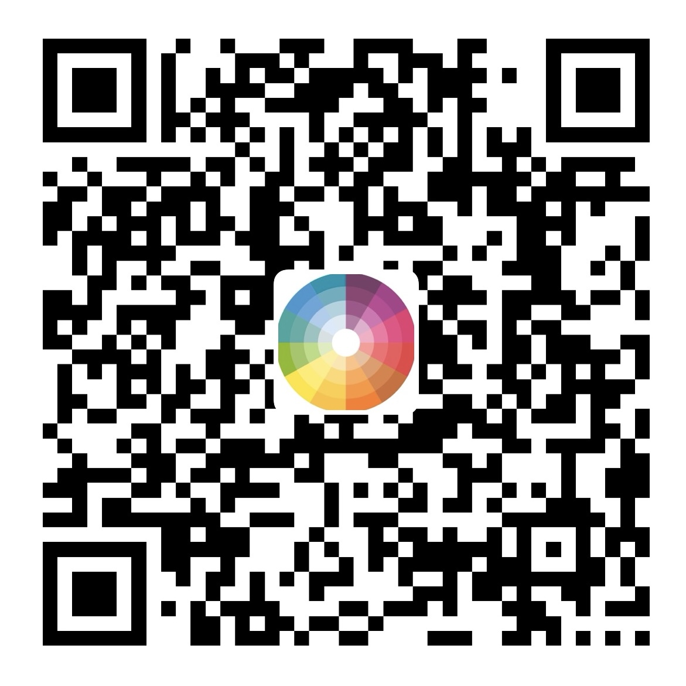

01 / FILES
DBC 与大型 ASC 解析
识别报文、信号、单位和数值定义，并以分片方式处理大型 ASC 日志，降低移动设备读取文件时的内存压力。
CANAnalysis 是一款面向测试与工程人员的浏览器工具。加载 DBC 与 ASC 文件后，即可完成信号解码、曲线查看和报文统计，不需要安装软件，也不依赖后端服务。
如在使用过程中遇到问题，或有功能建议与其他需求，欢迎发送邮件联系： whf969@foxmail.com
What it does
工具围绕日常 CAN 测试场景设计，尽量让文件加载、信号筛选、曲线观察和异常定位保持在同一个工作区中。
识别报文、信号、单位和数值定义，并以分片方式处理大型 ASC 日志，降低移动设备读取文件时的内存压力。
按名称或报文搜索信号，生成同步时间轴曲线，支持缩放、自适应范围、实时值观察和多种列表风格。
按 CAN ID 汇总帧数与帧间隔，结合 DBC 检查未知报文、信号越界、长时间恒定及疑似丢帧等现象。
响应式界面适配 iPhone 横竖屏、平板和桌面浏览器，现场测试与办公分析可以使用同一套工具。
Support
如果它帮你节省了排查时间，可以自愿支持后续维护。支持与否不会影响任何功能的使用。
